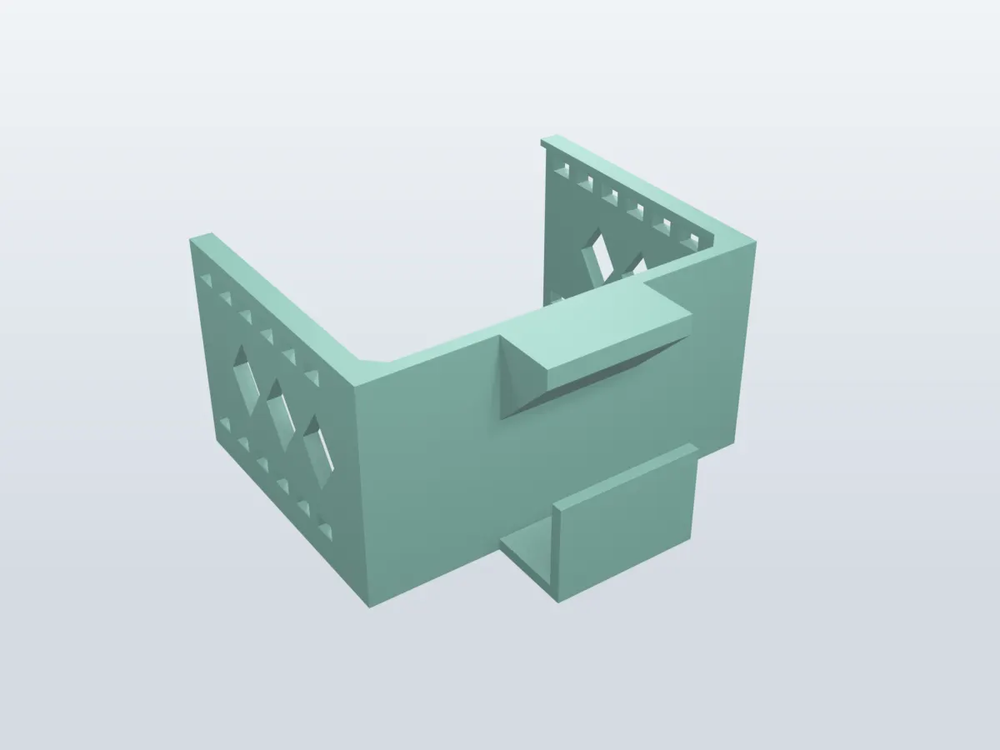

Shorts: vom Problem zum fertigen Teil
Messen, konstruieren, drucken, jeweils unter einer Minute.


Bis zum Klick werden nur Vorschaubilder von dieser Seite gezeigt. Erst beim Abspielen wird eine Verbindung zu YouTube (youtube-nocookie.com) aufgebaut. Mehr dazu in der Datenschutzerklärung.
Dreh den Sirup-Halter
Mit Maus, Finger oder Pfeiltasten. Gerendert in Blender direkt aus der Druckdatei-Geometrie.
 000°← ziehen zum Drehen →
000°← ziehen zum Drehen →
Sirup-Halter 2 × 4
Acht Fächer als Treppe, die hinteren stehen höher. So sieht man jedes Etikett. Gedruckt ohne Stützen auf dem A1 mini.
Was fertig ist und woran ich baue
Jedes Teil löst ein kleines Problem. Die Leiste zeigt, wie weit es ist.

Kühlschrankbox
Der ganze Weg in einem Teil: parametrisches CAD, FieldCraft-Simulation, Slicen und Druck über Home Assistant. Klickkraft von 3 N auf 46 N gesteigert.

Sirup-Halter
Gestufte Fächer für kleine Sirupflaschen: 2 × 4 für die Kühlschranktür, 2 × 2 für daneben. Ohne Stützen.

Briefbox
Briefständer mit vier gestuften Fächern und Etikettfeldern, damit die Post nicht mehr lose herumliegt.

Kamerahalter für die Druckerhaube
Hält eine kleine Kamera schräg über dem Snapmaker U1, damit der Zeitraffer klar wird.
Der Druck im Zeitraffer
Echter Zeitraffer aus Home Assistant: die Briefbox auf dem Snapmaker U1. Mitten im Druck war das schwarze ABS leer, weiter ging es in Gelb.
So entsteht ein Teil
Problem
Etwas kippt, fehlt oder liegt herum. Erst wird gemessen.
Konstruktion
Parametrisch im CAD, mit KI-Hilfe. Erst eine Skizze, dann das Modell.
Druck
Slicen, drucken, Zeitraffer aufnehmen. Die Zahlen kommen aus der echten Druckdatei.
Teilen
Als Short auf YouTube und, wenn es taugt, als Druckdatei auf MakerWorld.